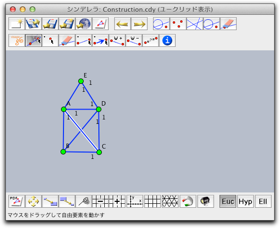

Visage: グラフアルゴリズムの視覚化
シンデレラの拡張機能 Visage は、ベルリンの DFG リサーチセンター Matheonで2005年に始まったプロジェクトに由来します。
ここでは、Visage の基本的な要素についての概要を述べます。 Visage についての詳細は(ドイツ語ですが) ウェブページ http://cinderella.de/visage
Visage を始める。

 |
| Visage のグラフアルゴリズムを選ぶ |
今、 "Draw Graph" アルゴリズムを選びます。シンデレラのツールバーは、編と頂点を描くためのツールを含む Visage 専用のツールバーに変わります。
 |
| 有名なグラフ |
このツールを使って、有向／有向でない、また重みのある／なしのグラフを描くことができます。 通常、選ばれたグラフアルゴリズムで利用できるタイプが制限されます。新しいアルゴリズム（とそのためのツールバー）は、いつでも
ボタンで選ぶことができ、可能ならば既存のグラフをそのまま利用することができます。アルゴリズムを動かす
Visage にはいくつかの組み込みアルゴリズムがあります。初期設定では、教育的な設定での視覚的効果を除けば、ステップ・バイ・ステップモードで実行されます。プレイボタン
 を押すたびに、１つのステップが実行されます。巻き戻しボタン
を押すたびに、１つのステップが実行されます。巻き戻しボタン  はアルゴリズムを再初期化して最初からやり直すことができます。
はアルゴリズムを再初期化して最初からやり直すことができます。 |
| 最初の探索における深度の視覚化 |
CindyScript との連携
CindyScript でもグラフアルゴリズムを書くことができます。 Visage のウェブサイトで、グラフの編と頂点にアクセスするための簡単なライブラリを見つけることができるでしょう。このライブラリは幾何的要素のユーザー属性によっています。ユーザー属性は CindyScript の２つのコマンドでアクセスできます。
ユーザー属性を設定する: attribute(<geo>,<string1>,<string2>)
説明： <string1> から <string2> で識別される<geo> のユーザー属性を設定します。
ユーザー属性を読む: attribute(<geo>,<string>)
説明：幾何要素 <geo> の <string> によって識別されるユーザー属性を返します。
Visage は有向線分でない端点を
"u" に、有向線分の端点を "d" に設定します。 "頂点" の属性は "v" に設定します。したがって、属性をチェックすればそのグラフの端点と頂点が識別できます。
alledges():=select(allsegments(),
attribute(#,"edge")=="u" % attribute(#,"edge")=="v");
allvertices():=select(allpoints(),attribute(#,"vertex")=="v");
もし、グラフアルゴリズムの開始点か終点をマークするならば、それは
"start" か "finish" という値を持つ "特別な頂点"という属性を持つことになります。最後に、重みつきの端点は、ユーザー属性 "weight" にその重さを保存します。流れアルゴリズムに対しては、容量と流れがユーザー属性 "capacity" と "flow" に保存されます。Java 拡張機能
Java を使ってVisage と連携するアルゴリズムを書くこともできます。しかしながら、そのような連携のための API はオンラインで http://cinderella.de/visage
visage@cinderella.de で私たちに連絡をしてください。
Page last modified on Sunday 26 of February, 2012 [13:33:09 UTC].
The original document is available at
http://doc.cinderella.de/tiki-index.php?page=VisageJ